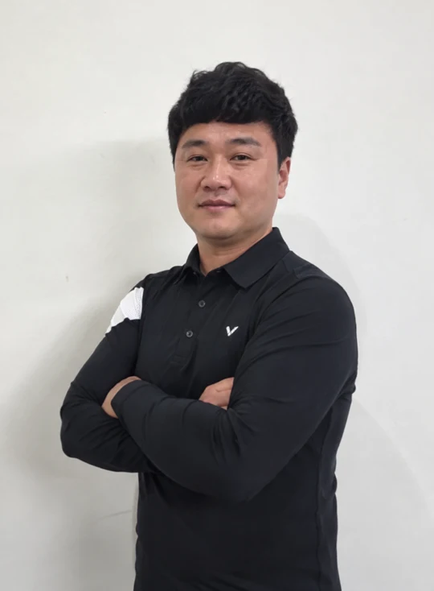

잡는다.
도구의 좌우 측면을 잡습니다.
DESIGNED BY A PRO. MADE FOR YOUR GAME.
경기장에서 느낀 불편을, 하나의 도구로.
프로선수 송규범이 만든 당구 큐 팁 관리 브랜드.
TRIBANT MULTI TIP TOOL & DIAL CHALK CASE
THE PROBLEM
사포, 줄칼, 니들 툴, 곡률 성형기.
흩어진 네 가지 도구를 대회장에서 챙기는 일.
TRIBANT는 그 불편에서 시작했습니다.
01 / MULTI TIP TOOL
좌우 측면을 잡고 돌려 보세요.
필요한 기능 면을 위로 올려 손질합니다.
기능 전환을 설명하는 개념도입니다. 실제 제품 외형과 다릅니다.
초크 한 알 정도의 크기.
큐 케이스나 가방에 넣어 다닐 수 있습니다.
모서리까지 활용.
큐 끝부분과 팁 옆면을 닦는 홈을 담았습니다.
HOW TO USE
도구의 좌우 측면을 잡습니다.
필요한 기능 면을 위로 돌립니다.
원하는 면으로 팁을 손질합니다.
초크케이스 실제 시제품 · 사진 속 형태는 별도 판매 모델을 뜻하지 않습니다
02 / DIAL CHALK CASE
TRIBANT 다이얼초크케이스
VENTURE ENTERPRISE
더 트리반트 (주식회사 더트리반트)는 2026년 9월 9일
혁신성장유형으로 벤처기업확인을 받았습니다.
기업에 대한 벤처기업확인이며, 제품의 안전성·품질·성능을 보증하는 인증은 아닙니다.
BUILT ON REAL EXPERIENCE
선수·동호인 36명 대상 설문 · 제공 자료 기준
통합형 제품에 관심
매우 관심 41.7% + 관심 27.8%프로선수의 개발·사용이
구매 결정에 영향
적정 가격대로
5만원 이하를 선택
소규모 설문 결과이며, 전체 시장의 반응을 대표하지 않습니다. 특허는 출원 단계입니다.

제공된 선수 사진을 바탕으로 AI 분리·보정한 이미지
FOUNDER'S STORY
“대회장에서 도구를 이것저것 챙기다 지쳐서,
하나로 끝나는 도구를 직접 만들었습니다.”
만 18세에 시작한 3쿠션. 전국 동호인 당구대회 6회 우승을 거쳐, 2019년 PBA 트라이아웃을 통과하며 프로선수로 전향했습니다. 현재 PBA 드림투어에서 선수 활동을 이어가고 있습니다.
경기장에서 쌓은 경험을 제품 설계와 개선에 담습니다. 다이얼초크케이스와 멀티 당구용품을 직접 개발하며, 선수와 동호인의 의견을 듣고 테스트를 진행하고 있습니다.
국내를 넘어 해외에서도 만나는 프리미엄 당구용품 브랜드. TRIBANT가 향하는 다음 목표입니다.
LESSONS WITH SONG
송규범 선수에게 당구 레슨을 문의해 보세요.
배우고 싶은 내용과 현재 구력, 가능한 지역과 시간을 알려 주세요. 레슨 진행 여부와 일정·장소·비용은 상담 후 안내합니다.
레슨 문의 준비하기 ↗문의 채널 연결 준비 중 · 현재 폼은 저장·전송되지 않습니다.
함께 이야기할 주제
지금의 고민과 목표를 알려 주세요.
실전에서 궁금했던 상황을 이야기해 주세요.
손질과 사용 중 생긴 궁금증을 남겨 주세요.
TRIBANT ON YOUTUBE
송규범 선수의 당구 이야기와 강의 영상을 이곳에서 만나보세요.
유튜브 채널과 첫 영상을 준비하고 있습니다.
강의 영상을 올리면 이곳에서 볼 수 있습니다.
채널 오픈 후 시청 링크를 안내합니다.
영상 공개 일정과 제목은 준비 중입니다.
OUR JOURNEY
팁 연마용 도구와 당구용 초크케이스를 개발하며 특허를 출원하고 초크케이스 시제품을 제작했습니다. 특허는 출원 단계입니다.
더 트리반트 (주식회사 더트리반트)의 사업자등록증명상 개업일입니다.
유효기간 2026.09.09–2029.09.08.
기업에 대한 확인이며, 제품 성능을 보증하는 인증은 아닙니다.
COMPANY NEWS / 더 트리반트 회사 소식
법인 설립 준비부터 특허 출원 준비, 제조업체 연결까지.
더 트리반트와 정율이 함께한 준비 과정을 소개합니다.
CHOOSE YOUR SETUP
가격과 구성은 예정이며 출시 전 변경될 수 있습니다.
현재 주문·결제는 제공하지 않습니다.
FAQ
사용 가능한 큐 팁과 규격은 확인 중입니다. 확인된 호환 정보를 출시 전에 안내하겠습니다.
교체용 사포·니들·줄이 포함된 리필 키트를 준비하고 있습니다. 교체 방법은 출시 전에 안내합니다.
단품으로 구매할 수 있도록 준비하고 있습니다. 현재는 출시 전이며 가격과 판매 조건은 확정 전입니다.
출시 일정은 아직 정해지지 않았습니다. 일정이 확정되면 홈페이지에 안내하겠습니다.
A/S 및 교환 정책은 준비 중입니다. 구매 전 확인할 수 있도록 정식 판매 전에 안내하겠습니다.
STAY IN THE GAME
출시 소식이나 제품·거래 문의를 준비해 주세요.
현재는 입력 확인용 미리보기입니다.
입력한 내용은 저장되거나 전송되지 않습니다.